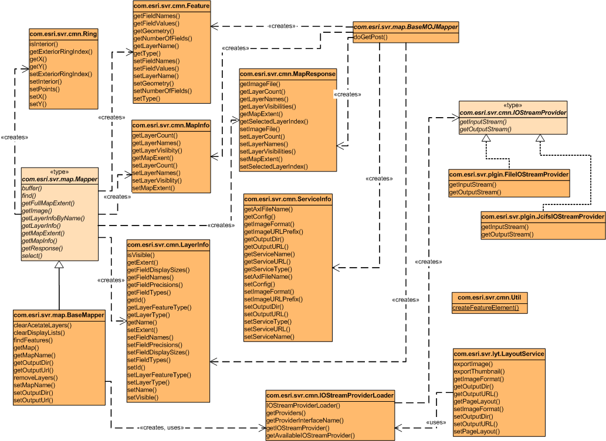

Provides a set of common and utility classes. This package contains
common and utility classes (for details see the diagram in this package's javadoc) in
which Feature, LayerInfo, MapInfo, Ring,
and ServiceInfo are serializable classes for passing data between
Web and EJB containers; Util class is a utility class for creating FeatureElement;
and IOStreamProvider and IOStreamProviderLoader give developers the
capability to plug in different input/output streams to write out map images.
Class Diagram of the Package Interfaces and Classes

Click the diagram to see a printer friendly version.